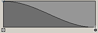

本主题介绍了“选择工具”(Select Tool)的选项。有关使用“选择工具”(Select Tool)以及如何选择对象的信息，请参见选择对象或组件主题中的“选择对象”。
-
工具箱(Tool Box)中的
 。双击选择工具图标以显示选择工具选项。
。双击选择工具图标以显示选择工具选项。
“选择工具”(Select Tool)选项
使用“工具设置”(Tool Settings)窗口可以指定“对称”(Symmetry)和“软选择”(Soft Selection)设置。在纹理编辑器面板中操作时，“选择工具”(Select Tool)具有纹理编辑器特定的选项。
公用选择选项(Common Selection Options)
- 基于摄影机的选择(Camera Based Selection)
-
启用后，只能相对于当前摄影机选择未被其他组件遮挡的组件。
- 选择样式(Selection Style)
-
确定在场景中拖动鼠标时发生的操作。
- 框选(Marquee)
-
在场景中将光标拖动到场景中的组件上时，将显示框选。在松开鼠标按钮时，将选择框选内的组件。
- 拖动(Drag)
-
将光标拖到组件上时，会选中光标下的所有组件。
如果已启用“基于摄影机的绘制选择”(Camera based paint selection)，只能相对于当前摄影机选择未被其他组件遮挡的组件。
- 自动基于摄影机的选择(Automatic camera based selection)
-
在着色模式下自动激活基于摄影机的选择，但在线框和 X 射线模式下将其禁用。覆盖其他所有基于摄影机的选择设置。
- 亮显背面(Highlight Backfaces)
-
启用后，背面组件将被预先选择亮显并可供选择。禁用此选项后，背面组件仍然可供选择，但不会被预先选择亮显。请参见选择组件前亮显组件。
- 亮显最近组件(Highlight Nearest Componen)
-
启用后，亮显距光标最近的组件，然后您可以选择它。默认情况下，在建模工具包和“选择工具”(Select Tool)设置中“亮显最近组件”(Highlight Nearest Component)处于启用状态。禁用“亮显最近组件”(Highlight Nearest Component)后，仅当光标放置在组件上方时才会亮显它们。

- 亮显受影响对象(Highlight Affected)
-
启用后，与选定对象关联或受其影响的对象将以不同的颜色亮显。有关详细信息，请参见“动画”(Animation)选项。
- 选择约束(Selection Constraint)
-
限制可以选择的组件。有关详细信息，请参见建模工具包选择约束。
在“UV 编辑器”(UV Editor)中操作时，可以使用另一组不同的选项。有关详细信息，请参见 UV 编辑器概述中的“选择约束”(Selection Constraint)。
软选择
- 重置(Reset)
-
将所有“软选择”(Soft Selection)设置恢复为其默认值。
- 衰减模式(Falloff mode)
-
设置衰减区域的形状。
- 体积(Volume)
-
“衰减模式”(Falloff Mode)设置为“体积”(Volume)时，衰减基于定位在影响物区域中心的球体的 3D 体积。
- 曲面(Surface)
-
“衰减模式”(Falloff Mode)设置为“表面”(Surface)时，衰减基于贴合表面轮廓的圆形区域。希望“软选择”(Soft Selection)衰减与表面一致时，“表面”(Surface)模式很有用。例如，可以使用基于表面的衰减模式，使角色面部的上嘴唇与下嘴唇分离。
- 全局
-
“衰减模式”(Falloff Mode)设置为“全局”(Global)时，衰减区域的确定方式与“体积”(Volume)设置相同，只是“软选择”(Soft Selection)影响物会影响“衰减半径”(Falloff Radius)中的任何网格，包括不属于原始选择的网格。
- 对象(Object)
- “衰减模式”(Falloff Mode)设置为“对象”(Object)时，可以使用衰减平移、旋转或缩放场景中的对象，无需使对象本身变形。
- 衰减半径(Falloff radius)
-
设置选定区域周围的衰减区域的大小。半径定义的区域取决于“衰减模式”(Falloff Mode)以及“选择模式”(Selection Mode)是否设置为“围绕当前选择”(Around Selection)。
还可以通过以下方法调整此值：启用“软选择”(Soft Selection)，然后按 B 键并拖动进行相对大小调整，或按 B 键和鼠标中键并拖动进行绝对大小调整，同时向左或向右拖动鼠标。
- 衰减曲线(Falloff curve)
-
控制“衰减半径”(Falloff Radius)定义的区域内衰减的权重。曲线图表示选择的影响强度与距选择的距离。
“衰减曲线”(Falloff Curve)的默认形状指定离选定区域近的位置影响较大，“衰减半径”(Falloff Radius)外边缘的影响较小。“衰减曲线”(Falloff Curve)的形状可通过拖动其上的现有点来进行手动调整。可通过单击曲线图来添加其他点。
- 插值(Interpolation)
-
控制从“衰减曲线”(Falloff curve)上的点到点计算值的方法。默认值为“平滑”(Smooth)。
- 无(None)
-
没有插值；“衰减半径”(Falloff Radius)中的所有组件都使用相同权重进行变换。
- 线性(Linear)
-
线性计算从选择附近的组件到远离选择的组件的加权衰减。
- 平滑(Smooth)
-
沿钟形曲线对加权衰减进行插值，以便“衰减曲线”(Falloff curve)上的每个值控制其周围区域，然后快速融合到下一个值。
- 样条线(Spline)
-
考虑相邻索引以获得大致处于“线性”(Linear)与“平滑”(Smooth)中间的效果。
- 曲线预设(Curve presets)
-
预设“衰减曲线”(Falloff curve)的形状。
- 视口颜色(Viewport color)
-
控制“衰减颜色”(Falloff color)是否显示在主视图面板中。
- 衰减颜色(Falloff color)
-
定义软选定区域的加权衰减区域的外观。通过向左和向右拖动渐变上方的小圆圈，可以调整每种颜色的权重。可以通过单击渐变本身来添加新颜色。可以通过单击渐变下方的相应框来移除颜色。可以使用“颜色”(Color)滑块调整每种颜色。
- 颜色(Color)
-
用于更改当前选定衰减颜色的颜色。可以通过单击“衰减颜色”(Falloff color)渐变上方的相应圆圈来选择它们。
可以通过单击颜色框，然后从“颜色选择器”(Color Chooser)中选择颜色来选择颜色。可以通过向左或向右拖动滑块来调整当前颜色的着色。
对称设置(Symmetry Settings)
- 重置(Reset)
-
将所有“对称设置”(Symmetry Settings)恢复为其默认值。注： 如果在启用了“对称”(Symmetry)的情况下重置，则会选择“对象”(Object)对称。
- 对称(Symmetry)
-
指定用于反射选择的坐标系。
提示： 使用鼠标中键单击 按钮可在上次选定的“对称”(Symmetry)模式和“禁用”(Off)之间切换。
按钮可在上次选定的“对称”(Symmetry)模式和“禁用”(Off)之间切换。
- 禁用(Off)
- （默认）禁用对称。
- 对象(Object)
-
“对象”(Object)空间上的对称会因对象而异，具体取决于其各自方向。
选择“对象 X”(Object X)、“对象 Y”(Object Y)或“对象 Z”(Object Z)以反映沿 x、y 或 z 轴的选择。
- 世界(World)
-
使用“世界”(World)空间的对称可以确保对称接缝与世界轴平行。
选择“世界 X”(World X)、“世界 Y”(World Y)或“世界 Z”(World Z)以反映沿 x、y 或 z 轴的选择。
- 拓扑
-
使用网格拓扑的对称可将网格一侧的组件映射到另一侧。请参见使用拓扑对称编辑网格。
- 容差(Tolerance)
-
设置选定组件和沿对称轴的组件彼此必须相距多近进行镜像才能视为对称。仅在禁用“软选择”(Soft Selection)后，它才有效。
如果该值设置得非常低，则组件必须几乎完全沿接缝镜像才能视为对称。较高的值允许组件的位置略有不同，并且仍被视为对称。在需要选择不完全对称的网格上的反射组件时，增加“容差”(Tolerance)会很有用。
“容差”(Tolerance)值只能是组件之间的距离的一小部分。例如，如果每个顶点与其旁边的顶点之间的距离是 0.1 个单位，则容差为 0.001 比较合适。
- 保持接缝(Preserve Seam)
-
启用后，Maya 不允许对接缝执行导致非对称网格的操作。
例如，如果选择模型接缝上的一个顶点，则将无法从接缝上移走它。请注意，您仍然可以沿接缝移动它，因为该操作仍保持模型的对称性。
- 接合口公差
-
启用“保持接缝”(Preserve Seam)后，设置对称接缝周围的衰减。该操作控制当接缝自身上的组件不能远离对称轴变换时，接缝附近的变换显示的平滑程度。
较高的值会增加衰减量，从而使接缝附近的变换更平滑。
- 接缝衰减(Seam falloff)
-
控制接缝容差定义的区域内衰减的权重。曲线图表示接缝的影响强度与距接缝的距离。
曲线的默认形状指定离接缝区域近的位置影响较大，“接缝容差”(Seam Tolerance)外边缘的影响较小。具有高接缝影响的区域更不易从接缝移开。
曲线的形状可通过拖动其上的现有点来进行手动调整。可通过单击曲线图来添加其他点。
- 允许部分对称(Allow partial symmetry)
- 启用后（默认），允许您使用拓扑对称编辑拓扑对称的网格部分，即使网格不是总体拓扑对称也是如此。请参见使用拓扑对称编辑网格和对称编辑